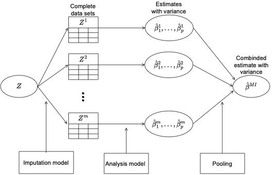
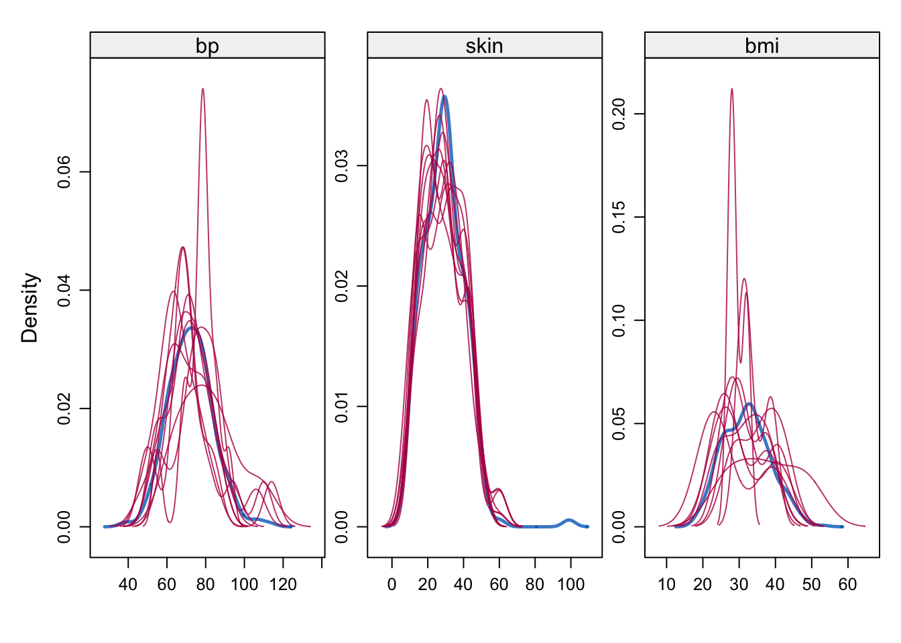

MA8701 Advanced methods in statistical inference and learning
Week 3 (L5+L6): Missing data
Course homepage: https://wiki.math.ntnu.no/ma8701/2023v/start
Reading list:
- Handbook of missing data methodology: Chapter 12.1.2, 12.2, 12.3.3. Available for download (60 pages pr day) from Oria at NTNU (Choose EBSCOweb, then PDF full text and then just download chapter 12). Molenberghs et al. (2014)
- Flexible imputation of missing data: Chapters 1.1, 1.2, 1.3, 1.4, 2.2.4, 2.3.2 (similar to Handbook 12.2), 3.2.1, 3.2.2 (Algo 3.1), 3.4 (Algo 3.3), 4.5.1, 4.5.2. van Buuren (2018)
Graphical overview of the topics covered in W3
1 Missing data
Many statistical analysis methods (for example regression) require the data (for analysis) to be complete. That is, for all data record (observations, rows) all the variable under study must be observed. But, in the real world this is not the case - some variables are missing for some observations (records, rows).
What are reasons for data to be missing?
Some reasons (not exhaustive):
- nonresponse,
- measurement error,
- data entry errors,
- data collection limitations,
- sensitive or private information,
- data cleaning.
The missingness may be intentional (sampling) or unintentional (refusal, self-selection, skip questions, coding error).
1.1 What can we do?
- delete all data records that are incomplete (have at least one missing value), and analyse these complete cases
- fill in a missing value with a “representative” value to get complete data aka single imputation
- as above, but make m datasets and analyse them all and then combine the results
- use statistical methods that have built in mechanisms to handle missing data (more about this in Part 3 - hint: trees)
- likelihood-based methods, where the missing data are modelled inside the model (not covered here)
- if the reason (mechanism) for the missing data is known, build a statistical model that takes this into account (will not be covered here).
It is important to understand the underlying mechanism for the observations to be missing, so that we may treat the missing data appropriately.
If we do not treat missing data correctly, this may lead to
- wrong conclusions (the observed data might not be representative for the population under study),
- there is a loss of power for statistical tests (or length of CIs) so that conclusions are weaker than if the data were complete, and
- the statistical analyses may be complicated since standard methods (assuming no missing data) can´t be used.
We first look at notation and then definitions of missing mechanisms.
1.2 Data sets
(Text provided by ChatGPT to “describe the NHANES data set in the mice R package.)
1.2.1 NHANES
The NHANES (National Health and Nutrition Examination Survey) data set is a collection of health and nutrition information collected by the National Center for Health Statistics (NCHS) of the Centers for Disease Control and Prevention (CDC). It is a nationally representative sample of the non-institutionalized civilian population of the United States. The data set includes information on demographic characteristics, health status, and health behaviors, as well as laboratory test results.
The data set is taken from Schafer, J.L. (1997). Analysis of Incomplete Multivariate Data. London: Chapman & Hall. Table 6.14.
- nhanes/nhanes2: data frame with 25 observations of four variables (age (three age groups), bmi (kg/\(m^2\)), hyp=hypertensive (1=no, 2=yes), chl=total serum cholesterol (mg/dL))
- nhanes/nhanes2: the same data sets, but in nhanes all variables are treated as numerical

[1] 25 41.2.2 Airquality
R base datasets. Daily air quality measurements in New York, May to September 1973.
- Ozone numeric Ozone (ppb)
- Solar.R numeric Solar R (lang)
- Wind numeric Wind (mph)
- Temp numeric Temperature (degrees F)
- Month numeric Month (1–12)
- Day numeric Day of month (1–31)


[1] 153 6
1.2.3 Growth of Dutch boys
(mice R package)
The data set of growth of 748 Dutch boys. Nine measurements
- age: decimal age (0-21 years)
- hgt: height (cm)
- wgt: weight (kg)
- bmi
- hc: head circumference (cm)
- gen: genital Tanner stage (G1-G5). Ordered factor
- phb: pubic hear (Tanner P1-P6). Ordered factor
- tv: testicular volume (ml)
- reg: region (north, east, west, south, city). Factor

[1] 748 9
1.2.4 Pima indians
(MASS R package)
We will use the classical data set of diabetes from a population of women of Pima Indian heritage in the US, available in the R MASS package. The following information is available for each woman:
- diabetes:
0= not present,1= present (variable called type) - npreg: number of pregnancies
- glu: plasma glucose concentration in an oral glucose tolerance test
- bp: diastolic blood pressure (mmHg)
- skin: triceps skin fold thickness (mm)
- bmi: body mass index (weight in kg/(height in m)\(^2\))
- ped: diabetes pedigree function.
- age: age in years
We will look at a data set (Pima.tr2) with a randomly selected set of 200 subjects (Pima.tr), plus 100 subjects with missing values in the explanatory variables.

[1] 300 8
1.3 Group discussion
Make sure the three types of plots are understood!
- pairs plot
- number of missing values
- missing patterns
2 Notation and missing mechanicms
2.1 Notation
We will use different letters for response and covariates, but often that is not done in other sources. (We will assume that missing values are only present in the covariates and not the response.)
By response we mean the response in the intended analysis model and ditto for the covariates. (We will later also talk about an imputation model but this is not connected to our notation here.)
- \({\mathbf y}\): response vector (no missing values)
- \({\mathbf X}\): the full covariate matrix
- \({\mathbf Z}=({\mathbf X},{\mathbf y})\): full responses and covariates
- \({\mathbf X}_{\text{obs}}\): the observed part of the covariate matrix
- \({\mathbf X}_{\text{mis}}\): the missing part of the covariate matrix
- \({\mathbf Z}_{\text{obs}}=({\mathbf X}_{\text{obs}},{\mathbf y})\): the observed responses and covariates
- \({\mathbf R}\): indicator matrix (0/1) for missingness/observability of \({\mathbf X}\), where \(1\) denotes observed and \(0\) denotes missing. (ELS 9.6 does the opposite, but that is not the common use.)
- \(\psi\): some parameter in the distribution of \({\mathbf R}\).
We may use the indicator matrix together with the missing data vector and observed data vector to write out the full covariate matrix.
The missing data mechanism is characterized by the conditional distribution of \({\mathbf R}\); \[P({\mathbf R} \mid {\mathbf Z},\psi)\]
2.2 Missing completely at random (MCAR)
\[P({\mathbf R} \mid {\mathbf Z},\psi)=P({\mathbf R} \mid \psi)\]
- All observations have the same probability of being missing, and
- the missing mechanism is not related to the data (not to observed or missing data).
If observations with MCAR data are removed that should not bias the analyses (but the sample size will of cause be smaller), because the subset of complete observations should have the same distribution as the full data set.
Examples:
- measure weight, and the scales run out of battery
- similar mechanism to taking a random sample
- a tube containing a blood sample of study subject is broken by accident and then the blood sample could not be analysed (a set of covariates are then missing)
2.3 Missing at random (MAR)
\[P({\mathbf R} \mid {\mathbf Z},\psi)=P({\mathbf R} \mid {\mathbf Z}_{\text obs},\psi)\]
- The probability of an entry to be missing depends (possibly) on observed data, but not on unobserved data.
- Thus, all information about the missing data that we need to perform valid statistical analysis is found in the observed data (but maybe difficult to construct a model for this).
- In a regression or classifiation setting this means that the missingness of a covariate may be dependent on the observed response.
- Remark: not dependent on what could have been observed (i.e. what is not observed).
Examples:
- measure weight, and the scales have different missing proportions when being on a hard or soft surface
- we have a group of healthy and sick individuals (this is the reponse), and for a proportion of the sick individuals the result of a diagnostic test is missing but for the healthy individuals there are no missing values
Most methods for handling missing data require the data to be MAR. If you know that the missingness is at least MAR, then there exists tests to check if the data also is MCAR.
2.4 Missing not at random (MNAR)
We have MNAR if we don´t have MAR or MCAR.
Then the missing mechanism could depend on what we could have measured (unobserved data) or other observed values (covariates or response that we are noe collecting). Statistical analyses can not be performed without modelling the underlying missing data mechanism.
Examples:
- the scales give more often missing values for heavier objects than for lighter objects
- a patient is too sick to perform some procedure that would show a high value of a measurement
- when asking a subject for his/her income missing data are more likely to occur when the income level is high
2.5 Group discussion
So far in your study/work/other - you might have analysed a data set (maybe on Kaggle or in a course). Think of one such data set.
- Did this data set have missing values?
- If yes, did you check if the observations were MCAR, MAR or MNAR?
- What did you (or the teacher etc) do to handle the missing data?
If you have not analysed missing data, instead look at the synthetic generation of data with different missing mechanisms below!
2.6 Synthetic example with missing mechanisms
Example from van Buuren (2018) Chapter 2.2.
A bivariate (0.5 correlation) normal response \((Y_1,Y_2)\) is generated \(N=300\), and then data are removed from the second component \(Y_2\). This is done in three ways:
- MCAR: each observation \(Y_2\) is missing with probability 0.5
- MAR: each observation \(Y_2\) is missing with probability dependent on \(Y_1\)
- MNAR: each observation \(Y_2\) is missing with probability dependent on \(Y_2\).
The boxplots of observed and missing values are shown.
Code
#|echo: true
#|warnings: false
#|error: false
# code from https://github.com/stefvanbuuren/fimdbook/blob/master/R/fimd.R
logistic <- function(x) exp(x) / (1 + exp(x))
set.seed(80122)
n <- 300
y <- MASS::mvrnorm(n = n, mu = c(0, 0),
Sigma = matrix(c(1, 0.5, 0.5, 1), nrow = 2))
r2.mcar <- 1 - rbinom(n, 1, 0.5)
r2.mar <- 1 - rbinom(n, 1, logistic(y[, 1]))
r2.mnar <- 1 - rbinom(n, 1, logistic(y[, 2]))Code
#|echo: false
#|warnings: false
#|error: false
# code from https://github.com/stefvanbuuren/fimdbook/blob/master/R/fimd.R
library(lattice)
y1 <- y[, 1]
y2 <- y[, 2]
y3 <- rbind(y,y,y)
r2 <- c(r2.mcar,r2.mar,r2.mnar)
r2 <- factor(r2, labels=c("Ymis","Yobs"))
typ <- factor(rep(3:1,each=n),labels=c("MNAR","MAR","MCAR"))
d <- data.frame(y1=y3[,1],y2=y3[,2],r2=r2,typ=typ)
trellis.par.set(box.rectangle=list(col=c(mdc(2),mdc(1)),lwd=1.2))
trellis.par.set(box.umbrella=list(col=c(mdc(2),mdc(1)),lwd=1.2))
trellis.par.set(plot.symbol=list(col=mdc(3),lwd=1))
tp <- bwplot(r2~y2|typ, data=d,
horizontal=TRUE, layout=c(1,3),
xlab=expression(Y[2]),
col=c(mdc(2),mdc(1)),strip=FALSE, xlim=c(-3,3),
strip.left = strip.custom(bg="grey95"))
print(tp)
3 Popular solutions to missing data
3.1 Use an analysis method that handles missing data
One such method is the CART classification and regression tree! How is it done? More in Part 3.
3.2 Complete case analysis
Discard all observations containing missing values. This is also called “listwise deletion”.
- Wasteful, but will give valid inference for MCAR.
- If the missing is MAR a complete case analysis may lead to bias. In a regression setting if a missing covariate is dependent on the response, then parameter estimates may become biased.
Let each variable have a probability for missing values of 0.05, then for 20 variables the probability of an observation to be complete is \((1 − 0.05)^20 = 0.36\), for 50 variables \(0.08\). Not many observations left with complete case analysis. Of cause some variables may have more missing than others, and removing those variables first may of cause lead to less observations that are incomplete
3.3 Pairwise deletion
For example when calculating a correlation matrix only complete pairs may enter in the calculation. This is also called “available-case analysis”. A covariance matrix constructed from pairwise deletion may not be positive definite.
3.4 Indicator variable method
Assume we have regression setting with missing values only in one of the covariates. The indicator method generates a new covariate as a missing indicator, and replaces the missing values in the original covariate with 0s.
van Buuren (2018) (Chapter 1.3.7) says that it can be shown that biased estimates of regression parameters can occur also under MCAR. However the method works in particular situation. Which situations this is I (Mette) have not looked into. Would be interesting to know.
A version of this method is used in machine learning. If the covariate is a categorical covariate then an extra category is created for the missing data. Here more information would be of interest to include!
3.5 Single imputation
here each missing value is imputed (filled in) once by some “estimate” or “prediction” and the data set is then assumed to be complete and standard statistical methods are used.
Problems with single imputation: Standard errors may be underestimated giving too narrow CIs and too low \(p\)-values. Why: the imputed data are treated as fixed (known) values.
Versions of single imputation:
3.5.1 LOCF
Last observation carried forward. Time series etc. Not recommended, unless there is a reason to believe that nothing has changed.
3.5.2 Mean imputation
Replace the missing value with the mean of the covariate over all samples.
This will decrease the variability in the data.
“Common solution” within machine learning, but not so common in statistics. Will not give valid inference (but unbiased estimate for the mean).
Example below (airquality data): Blue indicates the observed data, red indicates the imputed values.
Code
# code from https://github.com/stefvanbuuren/fimdbook/blob/master/R/fimd.R
library("mice")
source("mi.hist.R") #downloaded from https://github.com/stefvanbuuren/fimdbook/blob/master/R/
imp <- mice(airquality, method = "mean", m = 1, maxit = 1,print=FALSE)
lwd <- 0.6
data <- complete(imp)
Yobs <- airquality[,"Ozone"]
Yimp <- data[,"Ozone"]
mi.hist(Yimp, Yobs,b=seq(-20,200,10),type="continuous",
gray=F,lwd = lwd,
obs.lwd=1.5, mis.lwd=1.5, imp.lwd=1.5,
obs.col=mdc(4), mis.col=mdc(5), imp.col="transparent",
mlt=0.08,main="",xlab="Ozone (ppb)",
axes = FALSE)
box(lwd = 1)Code
plot(data[cci(imp),2:1],col=mdc(1), lwd=1.5,ylab="Ozone (ppb)",
xlab="Solar Radiation (lang)",ylim=c(-10,170),
axes = FALSE, pch=20)
points(data[ici(imp),2:1],col=mdc(2),lwd=1.5,pch=20)
axis(1, lwd = lwd)
axis(2, lwd = lwd, las = 1)
box(lwd = 1)
Quality of mean imputation: mean unbiased under MCAR, and regression weights or correlations not. Standard errors too small.
3.6 Regression imputation
Can we use the relationship between the variables to provide a more “sensible” value than the overall mean?
We look at the pair of Solar (here assume to not have missing values) and Ozone (with missing values). We fit a simple linear regression with Solar as covariate and Ozone as response using only the complete cases.
Then we turn to observations where Ozone is missing but Solar is observed, and use the regression model to predict Ozone as a function of Solar.
Code
#|echo: false
#|warnings: false
#|error: false
# code from https://github.com/stefvanbuuren/fimdbook/blob/master/R/fimd.R
fit <- lm(Ozone ~ Solar.R, data = airquality)
# by default complete case performed
pred <- predict(fit, newdata = ic(airquality))
# mice::ic=select the incomplete casesCode
#|echo: false
#|warnings: false
#|error: false
# code from https://github.com/stef
## ----plotregimp, duo = TRUE, echo=FALSE, fig.width=4.5, fig.height=2.25----
lwd <- 0.6
Yobs <- airquality[,"Ozone"]
Yimp <- Yobs
Yimp[ici(airquality)] <- pred
ss <- cci(airquality$Solar.R)
data <- data.frame(Ozone=Yimp, Solar.R=airquality$Solar.R)
mi.hist(Yimp[ss], Yobs[ss],b=seq(-20,200,10),type="continuous",
gray=F, lwd = lwd,
obs.lwd=1.5, mis.lwd=1.5, imp.lwd=1.5,
obs.col=mdc(4),mis.col=mdc(5), imp.col="transparent",
mlt=0.08,main="",xlab="Ozone (ppb)", axes = FALSE)
box(lwd = 1)
Code
plot(data[cci(imp),2:1],col=mdc(1),lwd=1.5,
ylab="Ozone (ppb)", xlab="Solar Radiation (lang)",
ylim=c(-10,170), axes = FALSE,pch=20)
points(data[ici(imp),2:1],col=mdc(2),lwd=1.5,pch=20)
axis(1, lwd = lwd)
axis(2, lwd = lwd, las = 1)
box(lwd = 1)
Same plot is produced with the code below, but now using the built in R mice function with method=“norm.predict”.
Code
#|echo: false
#|eval: false
#|warnings: false
#|error: false
# code from https://github.com/stefvanbuuren/fimdbook/blob/master/R/fimd.R
## ----regimp2, eval = FALSE-----------------------------------------------
data <- airquality[, c("Ozone", "Solar.R")]
imp <- mice(data, method = "norm.predict", seed = 1,
m = 1, print = FALSE)
xyplot(imp, Ozone ~ Solar.R,pch=20)Quality of regression imputation: mean and regression weights are unbiased under MAR. Correlation is not. The imputed red dots have correlation 1 (linear relationship). Standard errors too small.
3.7 Stochastic regression imputation
This is very similar to the regression imputation, but i the prediction phase we do not predict the mean, but instead start with this predicted mean and then add a random draw from the residuals of the model fit.
This may create observations outside the range of the data. See negatively predicted Ozone in the example below.
Code
#|echo: false
#|eval: true
#|warnings: false
#|error: false
# code from https://github.com/stefvanbuuren/fimdbook/blob/master/R/fimd.R
## ----sri-----------------------------------------------------------------
data <- airquality[, c("Ozone", "Solar.R")]
imp <- mice(data, method = "norm.nob", m = 1, maxit = 1,
seed = 1, print = FALSE)Code
#|echo: false
#|eval: true
#|warnings: false
#|error: false
# code from https://github.com/stefvanbuuren/fimdbook/blob/master/R/fimd.R
## ----plotsri, duo = TRUE, echo=FALSE, fig.width=4.5, fig.height=2.25-----
lwd <- 0.6
data <- complete(imp)
Yobs <- airquality[, "Ozone"]
Yimp <- data[, "Ozone"]
mi.hist(Yimp, Yobs,
b = seq(-40, 200, 10), type = "continuous",
gray = FALSE, lwd = lwd,
obs.lwd = 1.5, mis.lwd = 1.5, imp.lwd = 1.5,
obs.col = mdc(4),mis.col = mdc(5), imp.col = "transparent",
mlt = 0.08, main = "", xlab = "Ozone (ppb)")
box(lwd = 1)
Code
plot(data[cci(imp), 2:1], col = mdc(1),
lwd = 1.5, ylab = "Ozone (ppb)",
xlab = "Solar Radiation (lang)", ylim = c(-10, 170),
axes = FALSE,pch=20)
points(data[ici(imp), 2:1], col = mdc(2), lwd = 1.5,pch=20)
axis(1, lwd = lwd)
axis(2, lwd = lwd, las = 1)
box(lwd = 1)
Quality of stochastic regression imputation: mean, regression weights and correlations are unbiased under MAR. Standard errors too small.
3.8 Likelihood approaches
(Not included in 2023)
For example
- Bjørnland et al. (2018) Powerful extreme phenotype sampling designs and score tests for genetic association studies
- EM-algorithm from TMA4300 Computational statistics
3.9 Fully Bayesian approaches
Sadly, not covered here.
3.10 Group discussion
Of the single imputation methods the stochastic regression imputation method appears to be the best. Do you see why? Would you think of possible improvements to this method?
4 Multiple imputation
4.1 Short historical overview
Historically multiple imputation dates back to Donald B. Rubin in the 1970´s. The idea is that multiple data set (multiple imputations) will reflect the uncertainty in the missing data. To construct the \(m\) data sets theory from Bayesian statistics is used, but executed within the frequentist framework. Originally \(m=5\) imputed data sets was the rule of thumb.
The method did not become a standard tool until 2005 (according to van Buuren (2018), 2.1.2), but now in 2023 it is widely used in statistics and has replaced version of single imputation. However, multiple imputation is not main stream in machine learning.
4.2 Overview of the steps of the method
- Devise a method to construct the distribution of each covariate (that can be missing) based on other covariates (often a regression method). This is the Imputation model.
- Sample multiple observation for each missing value, and get \(m\) complete dataset.
- Analyse all \(m\) dataset as complete datasets with ordinary statistical methods (using the Analysis model)
- and weigh the results together using something called Rubin´s rules.
The method gives powerful and valid inference for MAR and MCAR, and “solved” the problem with the “too small standard errors” for the single imputation methods.
Lydersen (2022) gives a nice overview for medical doctors.
Schematic for multiple imputation from Marthe Bøe Ludvigsen project thesis.
Code
include_graphics("MIflowMBL.png")
We start with explaining the method for combining estimates with uncertainties from the \(m\) complete data analyses (using the planned Analysis model), and wait til the end with the Imputation model!
4.3 Analysis model
4.3.1 Pima indian data
In the Pima indian data set the aim is to model the connection between the presence/absence of diabetes (binary response) and the other measured variable.
This is the Analysis model for the Pima indian example.
4.3.2 Other examples
In other cases we might have a linear regression model.
In class we will look at an analysis by Marthe Bøe Ludvigsen for possible risk factors for predicting low and high levels of the suicial crisis syndrome. This is a collaboration with Terje Torgersen and Linde Melby at St Olavs Hospital/NTNU.
5 Rubin’s rules
5.1 Algorithmic view
Fist we look at formulas for our quantities of interest, and next the Bayesian motivation for the formulas.
5.1.1 Quantity of interest
We denote our quantity (parameter) of interest by \(\mathbf{Q}\), and assume this to be a \(k\times 1\) column vector.
Example 1: Multiple linear regression
\[\begin{align} \mathbf{Y} = \mathbf{X}{\boldsymbol \beta} + \boldsymbol{\varepsilon} \end{align}\] where \(\boldsymbol{\varepsilon}\sim N(\mathbf{0},\sigma^2\mathbf{I})\).
Here \(\mathbf{Q}=\boldsymbol{\beta}\).
Example 2: Logistic regression
Again \(\mathbf{Q}=\boldsymbol{\beta}\).
\(\mathbf{Q}\) can also be a vector of population means or population variances. It may not depend on a particular sample, so it cannot be a sample mean or a \(p\)-value.
5.1.2 Estimator
If we have a complete data set - our imputed data set number \(l\). we might get \(\hat{\mathbf{Q}}_l\) as our estimate. This takes into account the variablity in the complete data set.
Example 1: \(\hat{\boldsymbol{\beta}}=({\mathbf X}^T{\mathbf X})^{-1} {\mathbf X}^T {\mathbf Y}\)
Example 2: Maximizing the binary likelihood for the logistic regression (GLM with logit link) does not give a closed form solution, but a numerical value for \(\hat{\boldsymbol{\beta}}\) is found using Newton-Raphson.
We also want to take into account the fact that we have \(m\) complete data sets (multiple imputations). Let the pooled estimate be \[ \overline{\mathbf{Q}}=\frac{1}{m}\sum_{l=1}^m \hat{\mathbf{Q}}_l\]
This is based on each of the estimated \(\mathbf{Q}\) in our \(m\) imputed data set.
Next: uncertainty in \(\hat{\mathbf{Q}}_l\) and \(\overline{\mathbf{Q}}\).
5.1.3 Variance estimator
What is the variance of the new estimator \(\overline{\mathbf{Q}}\)?
Let \(\overline{\mathbf{U}}_l\) be the estimated covariance of \(\hat{\mathbf{Q}}_l\).
Example 1: \(\widehat{\text{Cov}}(\hat{\boldsymbol{\beta}})=({\mathbf X}^T{\mathbf X})^{-1} \hat{\sigma}^2\)
Example 2: \(\widehat{\text{Cov}}(\hat{\boldsymbol{\beta}})\approx I^{-1}(\hat{\boldsymbol{\beta}})\) the inverse of the estimated Fisher information matrix.
Within-imputation variance \[\overline{\mathbf U}=\frac{1}{m}\sum_{l=1}^m \overline{\mathbf{U}}_l\]
Between-imputation variance \[\mathbf B=\frac{1}{m-1}\sum_{l=1}^m (\hat{\mathbf{Q}}_l-\overline{\mathbf{Q}})(\hat{\mathbf{Q}}_l-\overline{\mathbf{Q}})^T\]
- \(\overline{\mathbf U}\): large if the number of observations \(N\) is small
- \({\mathbf B}\): large if many missing observations
- Total variance of \(\overline{\mathbf{Q}}\)
\[\mathbf{T}=\overline{\mathbf U}+\mathbf{B}+\frac{\mathbf{B}}{m}=\overline{\mathbf U}+(1+\frac{1}{m})\mathbf{B}\]
- First term: variance due to taking a sample and not examining the entire population (our conventional variance of estimator.
- Second term: extra variance due to missing values in the samples
- The last term is the simulation error: added because \(\overline{\mathbf{Q}}\) is based on finite \(m\)
5.1.4 Variance ratios
for scalar \(Q\) (for example one of the regression coefficients)
Proportion of variation “attributable” to the missing data \[ \lambda=\frac{B+B/m}{T}\] Relative increase in variance due to missingness
\[r=\frac{B+B/m}{\overline{U}}\]
Relation:
\[ r=\frac{\lambda}{1-\lambda}\]
5.1.5 Confidence interval
Common assumption: \(\overline{\mathbf{Q}}\) is multivariate normal with mean \(\mathbf{Q}\) and estimated covariance matrix \(\mathbf{T}\).
We look at one component of \(\mathbf{Q}\), denoted \(Q\) (maybe regression parameter for a specific covariate), antd \(T\) is the appropriate component of the total variance estimate.
\((1-\alpha)100\%\) confidence interval for \(Q\):
\[\overline{Q} \pm t_{\nu,1-\alpha/2}\sqrt{T}\]
where \(t_{\nu,1-\alpha/2}\) is the value in the \(t\)-distribution with \(\nu\) degrees of freedom with area \(1-\alpha/2\) to the left.
What is \(\nu\)?
5.1.6 Hypothesis test
We want to test \(H_0: Q=Q_0\) vs \(H_1: Q\neq Q_0\). The \(p\)-value of the test can be calculated as \[ P(F_{1,\nu} > \frac{(\overline{Q}-Q_0)}{T})\]
where \(F_{1,\nu}\) is a random variable following a Fisher distribution with \(1\) and \(\nu\) degrees of freedom.
5.1.7 Degrees of freedom
van Buuren (2018) Chapter 2.3.6 attributed this first solution to Rubind in 1987.
\[\nu_{\text{old}}=(m-1)(1+\frac{1}{r^2})=\frac{m-1}{\lambda^2}\]
If \(\lambda=1\) then all variability is due to the missingness and then \(\nu_{\text{old}}=m-1\).
If \(\lambda\rightarrow 0\) then \(\nu_{\text{old}}\rightarrow \infty\) (normal distribution instead of t, chisq instead of F).
van Buuren (2018) Chapter 2.3.6: A newer solution is due to Barnard and Rubin in 1999.
\[\nu_{\text{com}}=n-k\]
\[\nu_{\text{obs}}=\frac{\nu_{\text{com}}+1}{\nu_{\text{com}}+3} \nu_{\text{com}}(1-\lambda)\] \[\nu=\frac{\nu_{\text{old}}\nu_{\text{obs}}}{\nu_\text{old}+\nu_{\text{obs}}}\]
5.1.8 RHANES R-example
Code
imp <- mice(nhanes, print = FALSE, m = 10, seed = 24415)
fit <- with(imp, lm(bmi ~ age))
est <- pool(fit)
estClass: mipo m = 10
term m estimate ubar b t dfcom df
1 (Intercept) 10 29.621111 3.4810048 1.4312926 5.055427 23 12.62920
2 age 10 -1.802222 0.9257992 0.2759968 1.229396 23 14.42517
riv lambda fmi
1 0.4522895 0.3114320 0.3995451
2 0.3279291 0.2469478 0.3333805Identify the the different estimates defined above!
- df is the \(\nu\) above (Barnard-Rubin),
- while dfcom is the \(\nu_{\text{com}}\).
- \(r\): proportion of variance to due to missingness
- \(\lambda\): fraction of missing information
- \(\gamma\): fraction of information about \(Q\) due to missingness (not given formula)
5.1.9 Airquality R-example
Code
imp <- mice(airquality, print = FALSE, m = 10, seed = 24415)
fit <- with(imp, lm(Wind ~ Ozone))
est <- pool(fit)
estClass: mipo m = 10
term m estimate ubar b t dfcom
1 (Intercept) 10 12.59824641 1.520270e-01 2.593886e-02 1.805597e-01 151
2 Ozone 10 -0.06245227 5.416219e-05 1.599145e-05 7.175278e-05 151
df riv lambda fmi
1 93.07909 0.1876821 0.1580238 0.1755506
2 64.23966 0.3247762 0.2451555 0.26760795.1.10 Dutch boys R-example
Code
ggmice(boys, aes(age, wgt)) + geom_point()
Code
imp <- mice(boys, print = FALSE, m = 10, seed = 24415)
fit <- with(imp, lm(wgt ~ age))
est <- pool(fit)
estClass: mipo m = 10
term m estimate ubar b t dfcom df
1 (Intercept) 10 4.275250 0.242037333 2.812862e-04 0.242346747 746 742.9581
2 age 10 3.587684 0.001842701 5.689418e-06 0.001848959 746 740.7905
riv lambda fmi
1 0.001278376 0.001276744 0.003954437
2 0.003396298 0.003384802 0.0060646305.1.11 Pima indians R-example
Code
imp <- mice(Pima.tr2, print = FALSE, m = 10, seed = 24415)
fit <- with(imp, glm(type ~ bmi,family = "binomial"))
est <- pool(fit)
estClass: mipo m = 10
term m estimate ubar b t dfcom
1 (Intercept) 10 -3.84045347 0.4798495316 6.914875e-03 0.4874558946 298
2 bmi 10 0.09929536 0.0004251267 6.134841e-06 0.0004318751 298
df riv lambda fmi
1 289.1214 0.01585156 0.01560421 0.02234384
2 289.1090 0.01587368 0.01562564 0.02236542Identify the the different estimates defined above!
df is the \(\nu\) above (Barnard-Rubin), while dfcom is the \(\nu_{\text{com}}\).
5.2 Bayesian view
Presented in writing in class, see classnotes lecture 6
5.3 What can Rubin’s rules be used on?
For inference (see above for CI and \(p\)-value using t- and Fisher distribution) the assumption is that \(\overline{Q}\) is approximately multivariate normal.
- Regression parameters in multiple linear regression
- Regression parameters in logistic regression
- Correlations: but use Fishers z-transform to become more normally distributed
- ROC-AUC
- Recently also predictions from the analysis model
6 Imputation model in multiple imputation
6.1 Multiple linear regression imputation model
(van Buuren (2018) Chapter 3.2.1 and 3.2.2.)
Above, we looked at the two methods called “regression imputation” Section 3.6 and “stochastic regression imputation” Section 3.7. We may add one more method, the “Bayesian (multiple) imputation linear regression”.
The setting here is that
- we are missing values in one covariate in the analysis model,
- but have complete data for all other covariates and the response.
- We now assume a multiple linear regression model with the covariate with missing values as the response,
- and other covariates and the analysis model response as covariates in this imputation model
For the Bayesian part, the Wikipedia entry for Bayesian linear regression is useful reading, and we will also look into this in Part 2 on ridge regression (L7).
Summary: if the imputation model is a multiple linear regression model, and all covariates in the model are known (only missing values in the covariate that we make our target response), we know how to draw new observations to impute the missing values - and we may construct many imputed data sets.
6.2 Predictive mean matching
(van Buuren (2018) Chapter 3.4)
An hot deck method is a method where values are imputed based on existing values in the data set, by matching the missing observation with each of the observed observations (individuals).
Above (in the notes) we have considered the Bayesian linear regression and the “starting point” of the algorithm is that we have estimated the multiple linear regression coefficient \(\hat{\phi}\) and drawn \(\dot \phi\) from the posterior distribution.
Algorithm 3.3 in van Buuren (2018) Section 3.4.2, copied from github Rmd file:
Calculate \(\dot\phi\) and \(\hat\phi\) by Steps 1-8 of Algorithm 3.1.
Calculate \(\dot\eta(i,j)=|X_i^\mathrm{obs}\hat\phi-X_j^\mathrm{mis}\dot\phi|\) with \(i=1,\dots,n_1\) and \(j=1,\dots,n_0\).
Construct \(n_0\) sets \(Z_j\), each containing \(d\) candidate donors, from \(Y_\mathrm{obs}\) such that \(\sum_d\dot\eta(i,j)\) is minimum for all \(j=1,\dots,n_0\). Break ties randomly.
Draw one donor \(i_j\) from \(Z_j\) randomly for \(j=1,\dots,n_0\).
Calculate imputations \(\dot y_j = y_{i_j}\) for \(j=1,\dots,n_0\).
6.3 Missing patterns
Code
#|echo: false
# code from https://github.com/stefvanbuuren/fimdbook/blob/master/R/fimd.R
data <- matrix(sample(1:100,4*8*3,replace=TRUE),nrow=8*4,
dimnames=list(NULL,c("A","B","C")))
data <- as.data.frame(data)
data[c(31:32),"A"] <- NA
data[c(15:16,22:24,30:32),"B"] <- NA
data[c(6:8,12:16,17:21,27:29),"C"] <- NA
mdpat <- cbind(expand.grid(rec = 8:1, pat = 1:4, var = 1:3), r=as.numeric(as.vector(is.na(data))))
pattern1 <- data[1:8,]
pattern2 <- data[9:16,]
pattern3 <- data[17:24,]
pattern4 <- data[25:32,]
#types <- c("Univariate","Monotone","File matching","General")
types <- c("Univariate","Monotone","General")
mdpat3=mdpat[mdpat$pat!=3,]
levelplot(r~var+rec|as.factor(pat), data=mdpat3,
as.table=TRUE, aspect="iso",
shrink=c(0.9),
col.regions = mdc(1:2),
colorkey=FALSE,
scales=list(draw=FALSE),
xlab="", ylab="",
between = list(x=1,y=0),
strip = strip.custom(bg = "grey95", style = 1,
factor.levels = types))For univariate missing pattern, we already have a solution above Section 6.1, and this solution can be made more flexible with other regression types.
For monotone patterns, see Molenberghs et al. (2014) Section 12.3.1 for regression-based imputation - which can be seen as using the univariate missing pattern solution in sequence.
6.4 Joint modelling
Joint modelling handles general missing patterns, and assumes missing data are MAR.
A joint distribution for all variables are specified, often a multivariate normal distribution. Imputations are drawn from this model, and this can be done pr missing data pattern based on the conditional distribution for these patterns.
This method is popular with multilevel data (hierarchical model), and mixed types of variables (continuous, binary, categorical).
A popular solution is to model the observed data using Markov Chain Monte Carlo (MCMC) and treating the missing values as parameters and updating them in the MCMC algorithm.
See Molenberghs et al. (2014) Chapter 14.
6.5 Fully conditional specification
(also called chained equations, sequantial regression multivariate imputation)
van Buuren (2018) Sections 4.5.1 and 4.5.2 and Molenberghs et al. (2014) Chapter 13.
Also this type of solution is for general missing patterns, and when missing data are MAR.
6.5.1 Notation
We here need (even one more) new notation.
Let all variables for the imputation models be denoted \(Y\). This then includes the response and covariates of the analysis model, and additional variables that is to be included in the imputation model. Assume the data are now put into a \(N \times p\) matrix for \(N\) observations (rows) and \(p\) variables (columns).
- \(Y_{j}\): is then the vector with the \(j\)th variable to be modelled - this will be a response in the imputation model
- and the elements of \(Y_{_j}\) are either observed \(Y^{\mathrm{obs}}_{j}\) or missing \(Y^{\mathrm{mis}}_{j}\).
- \(Y_{-j}\): is then a matrix with all variables except the \(j\)th variable and are the covariates in an imputation model where \(Y_{j}\) is the response.
- \(R\) is the indicator matrix giving the missing pattern of \(Y\).
- \(\dot Y_j\): is a imputation of missing values in \(Y^{\mathrm{mis}}_{j}\).
- \(\phi_j\): are parameters in the imputation model where \(Y_{j}\) is the response and \(Y_{-j}\) are the covariates. This parameter is not related to the parameters of the analysis model.
6.5.2 MICE algorithm
The following algorithm is presented in Molenberghs et al. (2014) Figure 13.3 and van Buuren (2018) Algorithm 4.3 (Section 4.5.2), and copied from github Rmd file.
Specify an imputation model \(P(Y_j^\mathrm{m}|Y_j^\mathrm{obs}, Y_{-j}, R)\) for variable \(Y_j\) with \(j=1,\dots,p\).
For each \(j\), fill in starting imputations \(\dot Y_j^0\) by random draws from \(Y_j^\mathrm{obs}\).
Repeat for \(t = 1,\dots,M\).
Repeat for \(j = 1,\dots,p\).
Define \(\dot Y_{-j}^t = (\dot Y_1^t,\dots,\dot Y_{j-1}^t,\dot Y_{j+1}^{t-1},\dots,\dot Y_p^{t-1})\) as the currently complete data except \(Y_j\).
Draw \(\dot\phi_j^t \sim P(\phi_j^t|Y_j^\mathrm{obs}, \dot Y_{-j}^t, R)\).
Draw imputations \(\dot Y_j^t \sim P(Y_j^\mathrm{mis}|Y_j^\mathrm{obs}, \dot Y_{-j}^t, R, \dot\phi_j^t)\).
End repeat \(j\).
End repeat \(t\).
The number of iterations \(t\) is recommended to be 5 to 10. However, convergence of the algorithm can only be seen when it has been achieved, so more iterations may be needed.
Maybe this is not very clear from the algoritm, but this is a Markov Chain Monte Carlo method, and in particular it is a Gibbs sampler (if the conditional distribution together form a joint distribution). The algorithm must then be able to converge to a stationary distribution for us to use the results. Please refer to TMA4300 Computation statistics for detail on MCMC.
In the R mice package the \(m\) multiple imputation data sets (streams) are run in parallell - that is the MICE algorithm listed above is run \(m\) times simultaneously and convergence can be monitored for each and all streams together. In convergece plots then the \(m\) streams are plotted together for each of the \(t\) iterations.
The algorithm can run into problems if the variables in the imputation model are highly correlated, when the missing rate is high and when there are constraints on the imputation model.
See slides pages 85+86 of MICE course for difference between convergence and non-convergence of the MICE algorithm.
6.5.3 Predictors in imputation models
- Include “all” variables to be used in the main analysis (the analysis model)
- Better with too many predictors than too few (rich model is best)
- Include the data analysis model response as covariate in the imputation models, see for example Moons KG (2006)
- Include variables that are predictors of missingness, or associated with the varible to be inputed (none of these may be part of the analysis model)
- Limit the number of predictors for stability, and many MI methods does not handle correlated predictors very well
- Nonlinear effects and interactions - should that be included? Note: passive imputation!
6.6 R examples
6.6.1 NHANES
Code
imp = mice(nhanes, print = FALSE, m = 10, seed = 24415)
fit = with(imp, lm(bmi ~ age))
# Number of missing observations for our variables
imp$nmisage bmi hyp chl
0 9 8 10 Code
# Summary of mice results
summary(pool(fit)) term estimate std.error statistic df p.value
1 (Intercept) 29.621111 2.248428 13.174145 12.62920 9.477666e-09
2 age -1.802222 1.108781 -1.625408 14.42517 1.257173e-01Code
# Trace line plot, can be used to check convergence
plot(imp)
Code
# Density of observed and imputed data, observed in blue
densityplot(imp)
Code
# One dimensional scatter plots for observed and imputed data, observed in blue
stripplot(imp)
6.6.2 Airquality
Code
imp <- mice(airquality, print = FALSE, m = 100, seed = 24415)
imp$predictorMatrix Ozone Solar.R Wind Temp Month Day
Ozone 0 1 1 1 1 1
Solar.R 1 0 1 1 1 1
Wind 1 1 0 1 1 1
Temp 1 1 1 0 1 1
Month 1 1 1 1 0 1
Day 1 1 1 1 1 0Code
imp$method # only two variables have missing data and these use PMM Ozone Solar.R Wind Temp Month Day
"pmm" "pmm" "" "" "" "" Code
fit <- with(imp, lm(Wind~Temp+Month+Solar.R+Ozone))
est <- pool(fit)
estClass: mipo m = 100
term m estimate ubar b t dfcom
1 (Intercept) 100 15.904460339 5.543541e+00 3.212965e-01 5.868050e+00 148
2 Temp 100 -0.051514199 1.389312e-03 1.546204e-04 1.545479e-03 148
3 Month 100 -0.081483057 3.514546e-02 1.676292e-03 3.683851e-02 148
4 Solar.R 100 0.005374955 7.710940e-06 7.322321e-07 8.450495e-06 148
5 Ozone 100 -0.056164250 1.013722e-04 2.801934e-05 1.296717e-04 148
df riv lambda fmi
1 137.3781 0.05853830 0.05530107 0.06876042
2 129.5290 0.11240569 0.10104739 0.11461352
3 138.9150 0.04817279 0.04595883 0.05940408
4 131.8991 0.09590976 0.08751611 0.10104450
5 108.2238 0.27916473 0.21823986 0.23229729Code
# Trace line plot, can be used to check convergence
plot(imp)Code
# Density of observed and imputed data, observed in blue
densityplot(imp)Code
# One dimensional scatter plots for observed and imputed data, observed in blue
stripplot(imp)6.6.3 Pima indians
Default is that all available covariates are used as predictors for each missing variable. Here we do not have missing data in all variables, only skin, bp and bmi.
The methods for each imputation model are by default PMM for continuous and logistic regression for binary, and ordered logistic for categorical ordered. We only have continuous variables so all have PMM as default.
Code
imp <- mice(Pima.tr2, print = FALSE, m = 10, seed = 24415)
imp$predictorMatrix npreg glu bp skin bmi ped age type
npreg 0 1 1 1 1 1 1 1
glu 1 0 1 1 1 1 1 1
bp 1 1 0 1 1 1 1 1
skin 1 1 1 0 1 1 1 1
bmi 1 1 1 1 0 1 1 1
ped 1 1 1 1 1 0 1 1
age 1 1 1 1 1 1 0 1
type 1 1 1 1 1 1 1 0Code
imp$method # only three variables have missing data and these use PMMnpreg glu bp skin bmi ped age type
"" "" "pmm" "pmm" "pmm" "" "" "" Code
fit <- with(imp, glm(type ~ bmi+glu+bp+skin+ped+age+npreg,family = "binomial"))
est <- pool(fit)
estClass: mipo m = 10
term m estimate ubar b t dfcom
1 (Intercept) 10 -9.017293217 1.768031e+00 8.562343e-02 1.862217e+00 292
2 bmi 10 0.090112079 1.032292e-03 3.242343e-04 1.388950e-03 292
3 glu 10 0.037186980 3.478594e-05 1.619869e-07 3.496413e-05 292
4 bp 10 -0.007477016 2.177787e-04 1.439980e-05 2.336185e-04 292
5 skin 10 -0.005760483 3.130320e-04 1.741249e-04 5.045694e-04 292
6 ped 10 1.278515220 2.844704e-01 3.514902e-04 2.848570e-01 292
7 age 10 0.011237457 2.508869e-04 1.141528e-05 2.634437e-04 292
8 npreg 10 0.124595592 2.756896e-03 5.337703e-06 2.762767e-03 292
df riv lambda fmi
1 255.36623 0.053271556 0.050577229 0.057926663
2 83.57231 0.345500862 0.256782342 0.273952211
3 288.30227 0.005122346 0.005096242 0.011926973
4 237.55172 0.072733352 0.067801893 0.075552393
5 46.36292 0.611877743 0.379605554 0.404741607
6 289.60952 0.001359155 0.001357310 0.008183080
7 258.19534 0.050049666 0.047664094 0.054956229
8 289.36196 0.002129741 0.002125215 0.008951512Code
# Trace line plot, can be used to check convergence
plot(imp)Code
# Density of observed and imputed data, observed in blue
densityplot(imp)
Code
# One dimensional scatter plots for observed and imputed data, observed in blue
stripplot(imp)7 Model selection and assessment when using multiple imputation
Will address this to some extent in Part 2 and 3. Here are some elements to consider.
- Model selection can be done in the statistical analysis in the MI-loop, and there is a count method combined with Wald test that can be used to make a consensus model from the potentially \(m\) different MI-models. This is of cause dependent on that we have a parametric model as an analysis model. Done in case study presented in class (not in notes).
- If the analysis model is not a parametric model, maybe a tree or neural net or ensemble, what do we then do with Rubin’s rules? It is possible to use them on the predictions or on the ROC-AUC. But, is that useful to do on a “training set”?
- For model assessment we may use a separate test set. This test set will have missing data, and the missing data model can be used to impute \(m\) test sets. These test sets can then be run through the fitted final model (from the traning set) and Rubin’s rules can be used to give results on the test data. Note: role of analysis model response in test set imputed models.
- Model assessement without a test set may be done using an outer bootstrap loop around the MI-loop. Then the .632+ boostrap estimator is preferred in Wahl et al. (2016). For this publication a model selection step was not present - only model assessment.
- Other methods than regression type may be used for imputation, and SuperMICE is using an ensemble machine larning (we will cover the autoML aka SuperLearner i Part 3). See Laqueur, Shev, and Kagawa (2021).
8 Not covered
(this semester - will improve)
8.1 Ignorable and nonignorable
to which extent can we analyse the data without estimating the missingness paramterer \(\psi\)? The parameter of interest in the analysis model is \(\theta\). When can we estimated \(\theta\) without knowing \(\psi\)? Little and Rubin: missing data mechanism is ignorable (for likelihood inference) if MAR and parameters \(\theta\) and \(\psi\) distinct. More strict for Baysian inference, then priors for the two must be independent.
Further implications of nonignorability is that \(R\) must be a part of the imputation model.
9 Exercises
Missing… but this will be explored in the Data analysis project!
Maybe you want to look at the exercise from the van Buuren Winnipeg lectures:
https://amices.org/Winnipeg/Practicals/Practical_I.html https://amices.org/Winnipeg/Practicals/Practical_II.html https://amices.org/Winnipeg/Practicals/Practical_III.html https://amices.org/Winnipeg/Practicals/Practical_IV.html
9.1 Links
- https://cran.r-project.org/web/packages/naniar/vignettes/naniar-visualisation.html
- https://github.com/stefvanbuuren/fimdbook
- R-analysis from the FIMD book: https://github.com/stefvanbuuren/fimdbook/blob/master/R/fimd.R
- Slide set from Stef van Buuren (2017): https://amices.org/Winnipeg/Lectures/WinnipegHandout.pdf and https://amices.org/Winnipeg/
- https://amices.org/